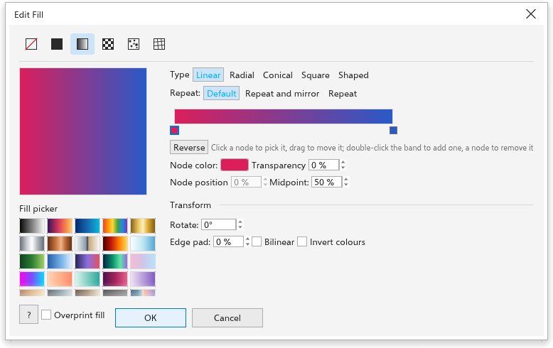

Dolgular
Dolgu, kapalı bir nesnenin içini boyar. TraceDraw'da altı tür dolgu vardır: Yok, Düz (tek bir düz renk), Gradyan (birbirine karışan renkler), Desen, Doku ve Ağ (bir ızgaranın düğümleri arasında akan renkler).
Bir nesneyi doldurmanın yolları
- Seçime düz bir dolgu vermek için paletteki bir renge tıklayın.
- Özellikler panelinin (F11) Dolgu bölümünü kullanın: resim sırasıyla dolgu türünü, ardından ayarlarını seçin.
- Degradeleri doğrudan nesnenin üzerinde ayarlamak için Etkileşimli Dolgu aracını (G) kullanın.
- Birkaç nesnenin çevrelediği bir alanı doldurmak için Alan Dolgusu aracını kullanın.
- Ağ dolgusu için Ağ Dolgusu aracını (M) kullanın.
Hiçbir şey seçili değilken seçtiğiniz dolgu yeni nesnelerin dolgusu olur.
Düz dolgular
Düz dolgu, herhangi bir renk modelinde tek bir renktir. Onu paletten, Renk panelinden (bkz. Renk paneli) veya Özellikler panelinin dolgu bölümünden seçin.
Degrade dolgular
Degrade iki veya daha fazla rengi karıştırır. Özellikler panelinin dolgu bölümündeki ayarları:
- Tür: Doğrusal (bir çizgi boyunca), Radyal (merkezden dışarıya), Konik (merkezin çevresinde), Kare (büyüyen karelerle) veya Shaped (nesnenin anahattını izleyerek, kenardan içeriye).
- Gradients: başlangıç için hazır degradeler.
- Duraklar: renkler ve degrade boyunca nerede durdukları, 2 ile 64 arası. Rengini veya konumunu değiştirmek için bir durak seçin; Durak ekle ve Durağı kaldır durak ekler ve kaldırır. Gradyan içe aktar renkleri bir
.ggrdegrade dosyasından alır. - Doğrusal, konik ve kare degradelerin açısı, kenar payı (her ucun ne kadarının düz renk olduğu) ve dairesel, konik ve kare degradelerin merkez kayması.
- Repeat: None, Sawtooth (renkler baştan yeniden akar) veya Mirror (ileri geri akarlar), Cycles sayısıyla birlikte.
- Bilinear: renkler ilkinden sonuncusuna ve geri akar.
- Invert colours: renkler ters sırada akar.
Türün altındaki bir şerit, renklerin tüm akışını çizileceği gibi gösterir.
Dolguyu Düzenle iletişim kutusu
F11 seçimin dolgusu için Edit Fill iletişim kutusunu açar. Bir gradyan için önizleme, Fill picker, tür, tekrar ve renk bandı gösterilir: seçmek için düğüme tıklayın, taşımak için sürükleyin, eklemek veya kaldırmak için çift tıklayın. Bandın altında düğümün rengi, saydamlığı, konumu ve Midpoint ile Reverse bulunur. Transform döndürme, merkez ve kenar boşluğunu içerir. Tamam değiştirdiklerinizi Overprint fill ile uygular.

Etkileşimli Dolgu aracı
Etkileşimli Dolgu aracı (G) dolguları nesnenin üzerinde düzenler.
- Aracı seçin ve bir nesnenin üzerinde sürükleyin: bastığınız yerden bıraktığınız yere kadar doğrusal bir degrade elde edersiniz. Açıyı 15 derecelik adımlarda tutmak için Ctrl tuşunu basılı tutun. Bir tıklama varsayılan dolguyu verir.
- Degradeyi değiştirmek için nesnenin üzerindeki düğümleri sürükleyin: doğrusal bir degradenin iki kare düğümü yönünü ve uzunluğunu değiştirir; dairesel, konik veya kare bir degradenin düğümü merkezini taşır.
- Yeniden renklendirmek için bir palet rengini bir düğümün üzerine, oraya renk eklemek için düğümler arasındaki çizginin üzerine sürükleyin.
Özellik çubuğunda dolgu türü ve ayarları bulunur: düz bir dolgunun rengi; bir degrade için tür, başlangıç ve bitiş renkleri, açı ve kenar payı.
Alan Dolgusu aracı
Alan Dolgusu aracı, üst üste binen birkaç nesnenin oluşturduğu bir alan bile olsa, herhangi bir kapalı alanı o alandan yeni bir nesne oluşturarak doldurur. Çevresindeki nesneler olduğu gibi kalır.
- Alan Dolgusu aracını seçin.
- Özellik çubuğunda dolguyu ve anahattı seçin: Varsayılanı kullan (yeni nesnelerin dolgusu ve anahattı; bu dolgu yoksa alan görünsün diye bir renk), Belirt (yanındaki renk ve anahat için kalınlık) veya Yok.
- Alanın içine tıklayın.
Yeni nesne etkin katmanın en üstüne gider ve seçilir. Bir anahattın üzerine veya hiçbir şeyin çevrelemediği bir alana tıklamak hiçbir şey oluşturmaz.
Ağ dolguları
Ağ dolgusu, bir nesnenin üzerinde her birinin kendi rengi ve saydamlığı olan düğümlerden oluşan bir ızgaradır; renkler düğümler arasında düzgünce akar. Gerçekçi gölgelendirmeye uygundur.
- Ağ Dolgusu aracını (M) seçin ve özellik çubuğunda satırları ve sütunları ayarlayın (başlangıçta 2'ye 2, en çok 50).
- Bir nesneye tıklayın. Nesne, dolgusunun renginde bir ağ alır.
- Seçmek için bir düğüme, ardından onu renklendirmek için paletteki bir renge tıklayın. Renklerin akışını bükmek için düğümleri sürükleyin.
- En yakın düğümden geçen bir satır veya sütun eklemek için ağın içine çift tıklayın; satırını ve sütununu kaldırmak için bir düğüm seçin ve Delete tuşuna basın.
Özellik çubuğunda ayrıca renkleri daha yumuşak karıştıran Düzgün renk, seçili düğümün saydamlığı ve ağ dolgusunu kaldıran Ağı Temizle bulunur. Bir ağın satırlarını ve sütunlarını değiştirmek renklerini korur.
Desen ve doku dolguları
- Desen dolgusu bir karoyu yineler: iki renk, bir vektör deseni veya bir bitmap. Bkz. Desen dolguları.
- Doku dolgusu üretilmiş, doğal görünümlü bir dokudur: renkleri ve ölçeğiyle birlikte Bulutlar, Mermer, Gürültü veya Ahşap.
Bir nesnede birden çok dolgu
Özellikler panelinin dolgu bölümünde Dolgu ekle, nesnenin kendi dolgusunun üzerine, değiştirilmek üzere bir kopya olarak başlayan başka bir dolgu boyar. Sonraki dolgular "Dolgu 2", "Dolgu 3" gibi görünür; her birinin kendi düzenleyicisi ve onu kaldıran bir düğmesi vardır. Anahat bölümü de aynı şekilde başka anahatlar ekleyebilir.
Dolgular anahatlara da boyanabilir; bkz. Anahatları ayarlama.